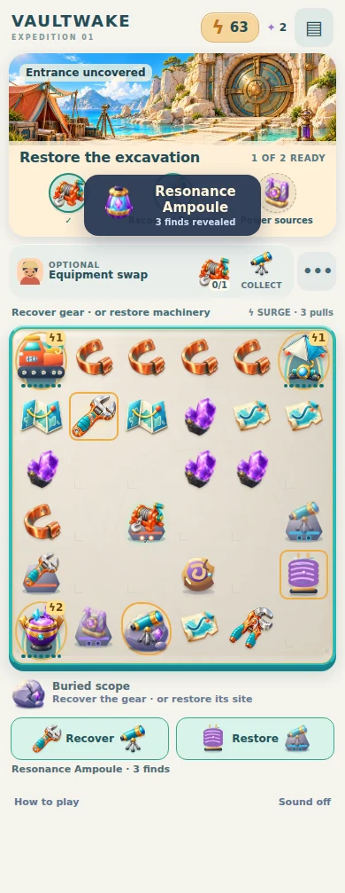
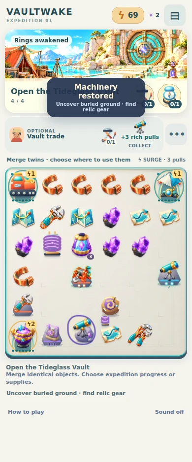

Recover the gear, or restore the machinery?
A focused gameplay test on PR #70. Real Chromium walkthrough captures at 390 CSS pixels. No paintovers or new artwork.
Play the current branch · Draft PR and test results
Opening: the board comes first
The excavation has a choice

Spanner: recover movable gear. Coil: restore the linked device.

Actual item consumption and immediate site consequence.
Automated browser captures; not a physical iPhone usability study. The chapter economy remains generous, and the energy/service loop remains a known limitation. This is a decision prototype for player feedback, not a claim of commercial completion.